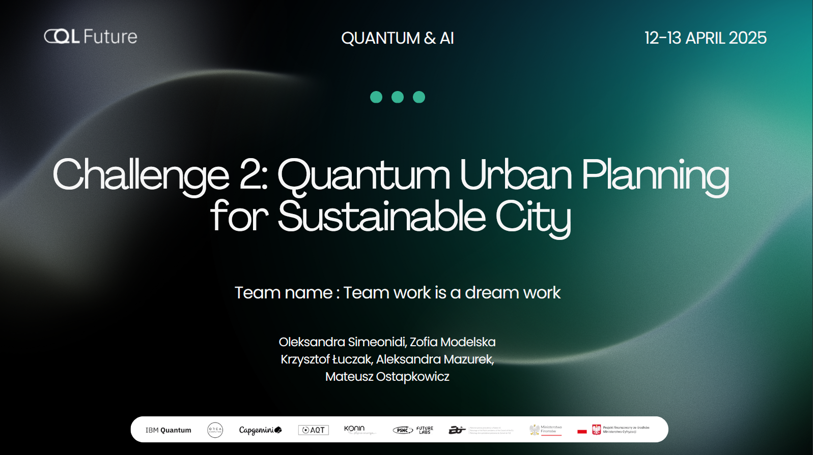
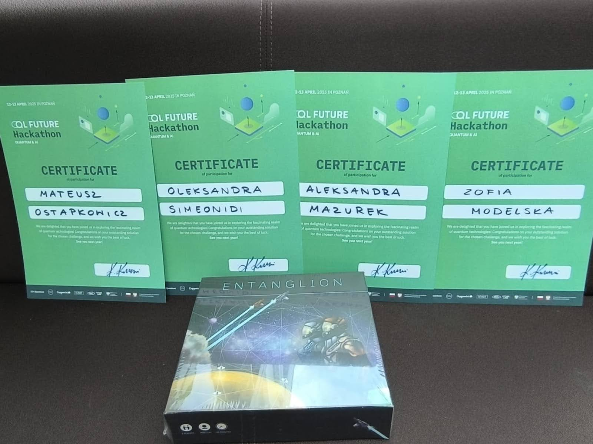

Hackathon – QL Future Hackathon 2025
Autor: Aleksandra Mazurek
W dniach 12–13 kwietnia 2025 r. odbył się QL Future Hackathon – wyjątkowe wydarzenie skupione wokół nowoczesnych technologii i inspiracji światem komputerów kwantowych. Uczestnikom zapewniono komfortowe warunki pracy: kawę, przekąski, obiady, a pierwszego dnia – pyszną pizzę.
Nasze Koło Naukowe Informatyków wzięło udział w hackathonie, wystawiając dwa zespoły. Jeden z nich został wyróżniony nagrodą TEAMWORK IS A DREAM WORK za znakomitą współpracę i innowacyjne podejście do rozwiązania postawionego problemu.
To był intensywny, ale bardzo rozwijający czas!